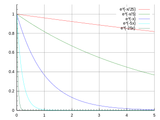

iFit: Models (fit models)
- How to use models
- List of default fit models
- Specialized models
- Small Angle Scattering models
(neutrons, x-rays)
- Powder structure refinement
(Rietveld)
- Phonon/spin-wave dispersion
- Phonon dispersion in perovskites
- Acoustic phonon dispersion in
mono-atomic cubic crystal
- Phonon dispersion from
ab-initio force estimate and dynamical matrix using
PHON/QuantumEspresso
- Phonon dispersion from ab-initio
force estimate and dynamical matrix using ASE
- Model builder: defining a new model
easy
- Creating complex functions from
simple functions
- Using signal
convolution/correlation in new functions
- How to write manually a model
function
How to use models
Models are numerical functions, that take input axes and a parameter
set, and return a function evaluation.
Such models are defined as iFunc objects,
and used in iFit when there is a need to e.g. compute and plot a
function evaluation corresponding with the axes of an iData object.
Similarly, this function evaluation can be used iteratively in an
optimization process in order to find a parameter set that matches
best the iData object Signal, using the fits method (refer to the Fit
page).
Models can be used in the following ways (for instance 'model' may
be 'gauss'):
>> model % display model information
>> disp(model) % idem, extensive information
>> plot(model) % plot the model with its default settings
>> model(p, x, y ...) % evaluate the model with parameters p, and axes x,y,...
>> model([], x, y ...) % evaluate the model with axes x,y,... and automatic parameter guess
>> model('guess', x, y ...) % idem
>> a(model, p) % evaluate the model onto the iData object 'a' axes with parameters p
>> fits(a, model, p) % fit the model onto the iData object
>> fits(model, a, p) % same as above
To create a model, use the ifitmakefunc
dialogue window (see below), or instantiate an iFunc
object.
>> model = gauss;
>> model = iFunc('p(1)*x+p(2)')
>> model = iFunc('a=p(1); b=p(2); signal=a*x+b')
You can edit their code to see how to define new models:
>> edit gauss % edit the function definition (from a file)
>> edit voigt
>> edit(voig) % edit the object definition
List of default fit models
The 1D functions are signal=f(parameters,
x), and the 2D functions are signal=f(parameters, x, y).
Function
|
Description
|
Dimensionality
|
Parameters
|
allometric
|
Allometric (power/asymptotic
law)
|
1D
|
Amplitude Offset Exponent
BackGround
|
bigauss
|
Asymmetric Gaussian
|
1D |
Amplitude Centre HalfWidth1
HalfWidth2 Background |
bilorz
|
Asymmetric Lorentzian
|
1D |
Amplitude Centre HalfWidth1
HalfWidth2 Background |
| bose |
Bose factor
|
1D |
Tau [h/2pi/kT] in "x" units
|
dho
|
Damped harmonic oscillator
|
1D |
Amplitude Centre HalfWidth
Background Temperature (in
"x" unit)
|
dirac
|
Dirac peak
|
1D
|
Amplitude Centre
|
doseresp
|
Dose-response curve with
variable Hill slope. This is a sigmoid or S-shaped.
|
1D
|
Amplitude Center Slope
BackGround
|
expon
|
Exponential
decay
|
1D |
Amplitude Tau Background
|
expstretched
|
Exponential
- Stretched
|
1D |
Amplitude Tau Exponent
Background
|
| gauss |
Gaussian
|
1D |
Amplitude Centre HalfWidth
Background
|
green
|
Green function
|
1D
|
Amplitude Centre HalfWidth
Background |
heaviside
|
Heaviside (gap)
The GapSide indicates
raising (+) or falling (-) gap.
|
1D
|
Amplitude Centre GapSide
Background
|
langevin
|
Langevin function for
magnetic polarization
|
1D
|
Amplitude Center Width
BackGround
|
laplace
|
Laplace
distribution function
|
1D |
Amplitude Center Width
BackGround |
lognormal
|
Log-Normal
distribution
|
1D |
Amplitude Center Width
BackGround
|
lorz
|
Lorentzian
(aka Cauchy)
|
1D |
Amplitude Centre HalfWidth
Background |
ngauss
|
multiple Gaussian
|
n*1D
|
|
nlorz
|
multiple Lorentzian
|
n*1D
|
|
pareto
|
Pareto distribution function
|
1D
|
Amplitude Exponent Width
BackGround
|
poisson
|
Poisson distribution
WARNING: The 'x' axis is assumed to be
an integer array (counts)
|
1D
|
Amplitude Center BackGround
|
pseudovoigt
|
Pseudo Voigt
|
1D
|
Amplitude Center Width
BackGround LorentzianRatio
|
quadline
|
Quadratic
line (parabola)
|
1D |
Quadratic Linear Constant
|
sigmoid
|
Sigmoidal
S-shaped curve (similar to Dose Response)
|
1D |
Amplitude Center Width
BackGround |
sine
|
Sine
function
|
1D |
Amplitude Phase_Shift Period
BackGround
|
sinedamp
|
Damped
Sine function (exponential decay)
|
1D |
Amplitude Phase_Shift Period
BackGround Decay
|
strline
|
Straight
line
|
1D |
Gradient Background
|
triangl
|
Triangular
|
1D |
Amplitude Centre HalfWidth
Background |
tophat
|
Top-Hat
rectangular function
|
1D |
Amplitude Centre HalfWidth
Background |
twoexp
|
Two exponential decay
functions
|
1D |
Amplitude1 Tau1 Amplitude2
Tau2 Background
|
voigt
|
Voigt
function
|
1D |
Amplitude Centre
HalfWidth_Gauss HalfWidth_Lorz Background
|
gauss2d
|
Gaussian
function with tilt angle
|
2D |
Amplitude Centre_X Center_Y
HalfWidth_X HalfWidth_Y Angle Background
|
lorz2d
|
Lorentzian
function with tilt angle |
2D |
Amplitude Centre_X Center_Y
HalfWidth_X HalfWidth_Y Angle Background |
plane2d
|
Planar function
|
2D |
Slope_X Slope_Y Background
|
pseudovoigt2d
|
Pseudo Voigt with tilt
angle |
2D |
Amplitude Centre_X Center_Y
HalfWidth_X HalfWidth_Y Angle Background LorentzianRatio
|
quad2d
|
Quadratic (parabola) with
tilt angle |
2D |
Amplitude Centre_X Center_Y
Curvature_X Curvature_Y Angle Background |
gaussnd
|
n-dimensional
Gaussian
|
nD
|
|
sf_hard_spheres
|
Hard Sphere structure factor
[Percus-Yevick]
|
1D  |
R rho
|
rietveld
|
Rietveld
refinement of powder sample
with full McStas
instrument model
|
1D,
2D, 3D
|
sample structure,
instrument parameters
|
| sqw_sine3d |
Phonon dispersions as sine
wave in HKL with a damped harmonic oscillator energy
dispersion |
4D (HKLw)
 |
zone center, energy gaps, periodicity |
| sqw_vaks |
Phonon dispersions in perovskite cubic
crystals using the Vaks parameterisation |
4D (HKLw)
 |
acoustic and optical energies, coupling
parameters, soft mode frequency
|
| sqw_cubic_monoatomic |
Phonon dispersions in a monoatomic cubic
crystal using the Dynamical matrix. |
4D (HKLw)
 |
acoustic force constant ratio and energy
scaling.
|
| sqw_phon |
Phonon dispersions from the Dynamical matrix,
using forces estimated by ab-initio, using PHON/QE.
|
4D (HKLw)
|
Creation: POSCAR.
Then, only the DHO line shape. ab-initio implies no
(few) tunable parameter. |
| sqw_ph_ase |
Phonon dispersions from the Dynamical matrix,
using forces estimated by ab-initio using ASE.
|
4D (HKLw)
 |
Creation: POSCAR,
CIF,
or PDB, ...
Then, only the DHO line shape. ab-initio implies no
(few) tunable parameter. |
")
>> gauss
>> a = gauss;
The list of all available fit functions can be obtained from the command:
>> fits(iData);
which also produces the plot above.
Specialized models
Small Angle
Scattering models (neutrons, x-rays)
We list below a number of models used to describe neutron and
x-ray scattering from matter. The structure factor S(q) accounts
for the structure of matter at the atomistic/molecular level,
whereas the form factor P(q) accounts for the geometrical
arrangement of large scale scattering units (micelles, tubes,
...). In practice, the scattering from a material can be described
by:
I(q)
= P(q).S(q)
where q is the momentum exchange in the material.
These models have been extracted from:
Structure factors
|
Description
|
Dimensionality
|
Parameters
|
sf_hard_spheres
|
Hard Sphere structure factor
[Percus-Yevick]
|
1D |
R rho
|
sf_square_well
|
structure factor of particles
interacting with a square well potential [Sharma]
|
1D
|
R rho epsilon Delta T
|
sf_sticky_hard_spheres
|
Sticky Hard Sphere structure
factor [Baxter/Menon]
|
1D
|
R rho tau
|
Form factors: small angle
|
Description
|
Dimensionality
|
Parameters
|
ff_core_shell
|
Spherical/core shell form
factor [Guinier]
|
1D
|
R1 R2 eta1 eta2
|
ff_sphere
|
Sphere form factor [Guinier]
|
1D
|
R eta
|
Powder structure
refinement (Rietveld)
The rietveld model performs a structure refinement (atom
type and position, structure group) of a powder by comparing a
measured diffractogram with a simulated diffractogram using McStas and CrysFML.
This model requires external software to be installed on your
computer. See Requirements below.
Powder diffraction
|
Description
|
Dimensionality
|
Parameters
|
rietveld
|
Rietveld
refinement of powder sample
with full McStas
instrument model
|
1D,
2D, 3D
|
sample structure,
instrument parameters
|
The 'rietveld' model allows to prepare a sample+instrument
model in order to fit a diffraction/structure data set.
It is obtained by making use of the CrysFML library:
The procedure is to import a crystal structure (CIF, ShellX, CFL
format) then compute the HKL d-F2 list of
reflections (for crystal or powder), and insert this powder model
into a diffractometer simulated using McStas. The detector image, which
is the convolution of the sample structure with the instrument
resolution, is then compared with a given diffractogram, and
optimised to refine the crystal parameters.
The syntax to build the model, and then perform the refinement is:
>> model=rietveld(structure, ...., instrument, ....)
>> p = fits(model, measurement);
where the 'structure' describes the initial sample structure (space
group, cell parameters abc αβγ, atom positions, ...); it can be
given as a CIF, FullProf or ShellX file, as well as from a struct type variable with
fields 'Spgr' and 'cell', followed with atoms
(giving xyz Biso occupancy spin charge, where only xyz are
mandatory, others are optional):
Sample.cell = [10.242696 10.242696 10.242696 90.000 90.000 90.000];
Sample.Spgr = 'I 21 3';
Sample.Ca1 = [0.46737 0.00000 0.25000 0.60046 0.50000 0.0 2.0];
...
the instrument is the name of the McStas instrument description (templateDIFF.instr is the
default). The McStas simulation can be controlled using the default
McStas options, as described in the dedicated
help page : dir, ncount,
mpi, seed, gravitation, compile, monitors. The monitors
options is particularly recommended to specify which monitor file to
use from the virtual experiment. The resulting model data set should
be of the same type as the diffractometer measured data set (e.g.
TOF-angle, height-angle, ...), but not necessarily with same binning
and axes range.
Any other 'name=value'
argument is assumed to be an instrument parameter. Any scalar
parameter is made into a model parameter, whereas string/char
parameters are set as fixed instrument parameters. By default, the
sample structure (powder/single crystal) is made available to the
McStas instrument by mean of a 'reflections.laz'
file which should be used by a PowderN
or Isotropic_Sqw
component. This name can be changed by specifying the
'CFML_write=filename' option.
An example of Rietveld model is obtained from a CFL file, and the
templateDIFF instrument including PowderN(reflections=Powder,...).
We thus specify the fixed instrument parameter Powder='reflections.laz'. The
wavelength is kept fixed at 2.36, and we use monitor names matching
BananaTheta.
>> model = rietveld([ ifitpath 'Data/Na2Ca3Al2F14.cfl' ], 'templateDIFF.instr', 'Powder=reflections.laz; lambda="2.36"; monitors=BananaTheta');
Once built, it is possible to set constraints on the model with the
syntax such as (see iFunc
page) :
>> model.parameter='fix' % to lock its value during a fit process
>> model.parameter='clear' % to unlock value during a fit process
>> model.parameter=[min max] % to bound value
>> model.parameter=[nan nan] % to remove bound constraint
>> model.parameter='' % to remove all constraints on 'parameter'
>> model.Constraint='' % to remove all constraints
Then we import a data set
>> measurement = iData([ ifitpath 'Data/nac_1645179.dat' ]);
The refinement is then obtained by starting :
>> parameters = fits(model, measurement)
with optional arguments as described in the Fit
page (the 'constraints' argument of fits is partly redundant with the model
constraints seen above).
Remember to bound most or all of the model parameters for a faster
and more reliable convergence of the optimization.
References:
CrysFML, Commission on Crystallographic Computing,
IUCr Newsletter No.1, pp 50-58, January 2003 [link].
McStas: K. Lefmann and K. Nielsen, Neutron News 10, 20, (1999) ; P.
Willendrup, E. Farhi and K. Lefmann, Physica B, 350 (2004) 735.
Requirements/installation:
McStas must be installed.
Packages exist for all major systems (Linux as RedHat and Debian
flavours, Windows, Mac OSX). For Debian-class systems:
cd /etc/apt/sources.list.d
sudo wget http://packages.mccode.org/debian/mccode.list
sudo apt-get update
sudo apt-get install mcstas-suite
The CrysFML does not need to be installed, as the used bits are
assembled in the cif2hkl
fortran programme, which generates HKL d-F2 reflection lists
suitable for the PowderN and Isotropic_Sqw McStas components. The
cif2hkl programme is part of the iFit distribution, and is compiled
by calling the local fortran compiler (gfortran) on demand.
Phonon/spin-wave
dispersion
The sqw_sine3d model provides a simple way to model most
phonon-type
dispersions, including spin-waves,
acoustic and optical modes, incommensurate dispersions.
Limitation: this model only handles simple
sine dispersions, and can not treat mode exchange (interferences).
S(q,w)
|
Description
|
Dimensionality
|
Parameters
|
| sqw_sine3d
|
Phonon dispersions as sine
wave in HKL (3D) with a damped harmonic oscillator energy
dispersion |
4D
(HKLw)
|
zone center, energy gaps,
periodicity
|
Each dispersion is a sine wave which goes continuously from
energy E0 to E1, along 3 principal lattice directions (HKL). The
dispersion has an energy width (DHO). Schematically, the
dispersion relation is:
w(Q) = E0 + (E1-E0)*sin(Q_freq*pi*(Q-Q0));
along principal axes
where the wave-vector/momentum Q is expressed in reciprocal
lattice units [r.l.u]. The parameters of this model allow extended
flexibility in the description of the mode. Along the 3D HKL
volume, a dispersion is described with 10 parameters.
The Q_freq parameter indicates how many dispersion sine
'arches' there are per reciprocal lattice unit [rlu]. A Q_freq
of 1/2 means the dispersion extends from e.g. Q=0 to Q=2 rlu. A Q_freq
of 1 means it extends from Q=0 to Q=1 rlu, and a Q_freq of
2 means there are two arches between Q=0 and Q=1 rlu (all these
with Q0=0). A Q_freq of 0 sets a flat dispersion.
To create the model without defined parameter values, you may
use:
sw = sqw_sine3d;
or alternatively, to define starting parameters:
sw = sqw_sine3d(p);
where p=[...] is a vector containing the parameter values.
It may be given as 1,2,3 and 14 value vector, as detailed below.
A spin-wave could for instance mostly use Q0=0,
Q_freq=1, E0=0, E1>0 (2 arches from Q=0 to 1 rlu). In a
simple anti-ferromagnet, the gap width is E1-E0=4J.S with
J=exchange energy and S=magnetic moment of spins.
>> sw = sqw_sine3d([ E0 E1 Q_freq ]) % creates a dispersion from E0 to E1 with given Q frequency, e.g. .5, 1 or 2
A phonon acoustic branch could use Q0=0, Q_freq=.5, E0=0
(1 arch from Q=0 to 1 rlu).
>> acoustic = sqw_sine3d(Emax) % creates an acoustic dispersion up to Emax
An phonon optical branch could use Q0=0, Q_freq=.2,
E0>E1 E1>0 (1 arch from Q=0 to 1 rlu with Q=0 energy - Raman
frequency).
>> optical = sqw_sine3d([ E0 E1 ]) % creates an optical dispersion from E0 to E1
The model parameters allow to tune the dispersion:
- To shift the minimum/maximum Q of the dispersion, move QH0,QK0,QL0
parameters.
- To change the extent of the dispersion in Q, vary QH_freq,QK_freq,QL_freq
parameters.
- To change to minimum and maximum energy, move E0 and
E1_qh,E1_qk,E1_ql parameters.
- To model an incommensurate dispersion, move both QH0,QK0,QL0
and the QH_freq,QL_freq,QK_freq parameters to
incommensurate (non rational) values.
- An anisotropic model can be obtained by having different E1
and Q_freq parameters along axes.
- A 1D or 2D dispersion can be obtained when setting the
frequencies (e.g. QK_freq QL_freq) to 0
The model parameters are:
p(
1)=
E1_qh energy at QH half period [meV]
p(
2)=
E1_qk energy at QK half period [meV]
p(
3)=
E1_ql energy at QL half period [meV]
p(
4)=
E0 zone-centre energy gap [meV]
p(
5)=
QH0 QH zone-centre [rlu]
p(
6)=
QK0 QK zone-centre [rlu]
p(
7)=
QL0 QL zone-centre [rlu]
p(
8)=
QH_freq QH frequency [multiples of pi]
p(
9)=
QK_freq QK frequency [multiples of pi]
p(
10)=
QL_freq QL frequency [multiples of pi]
p(
11)=
Gamma Damped Harmonic Oscillator width in energy [meV]
p( 12)= Temperature
[K]
p(
13)=
Amplitude
p(
14)= Background
The axes needed for the evaluation are expressed in rlu for
QH,QK,QL and in meV for the energy.
A usage example is as follows:
>> ac=sqw_sine3d(5); % an acoustic branch up to 5 meV
>> qh=linspace(0,1,50);qk=qh; ql=qh'; w=linspace(0.01,10,50); % the axes for evaluation
>> f=iData(s,[],qh,qk,ql,w); % evaluate the model onto given axes
>> plot3(log(f(:,:,1,:))); % plot as volume in [QH,QK,w, QL=0]. You can also use surf and scatter3 for other rendering
The axes are given as vectors, but the second is made
non-parallel to the others, to indicate we wish to build a volume
out of this. Without transposing the vector, as all axes are the
same length, they would be interpreted as event data, and the
resulting evaluation would only contain 50 values.
It is possible to stack as many modes as possible, in different
flavors. In this case it is advisable to link e.g. the Temperature
and Background parameters:
>> acoustic = sqw_sine3d(5); optical = sqw_sine3d([ 10 8 ]); sw = sqw_sine3d([ 2 4 1 ]);
>> disp3 = acoustic + optical + sw;
>> disp3.Temperature_2 = '"Temperature"'; % Temperature_2 = Temperature (1st sin3d)
>> disp3.Temperature_3 = '"Temperature"'; % Temperature_3 = Temperature
>> disp3.Name='sqw_sine3d: acousitc+optical+sw';
>> mlock(disp3, {'Background_2','Background_3'}); % keep them as 0 (default)
>> qh=linspace(0,1,50);qk=qh; ql=qh; w=linspace(0.01,10,51); % the axes for evaluation
>> f=iData(disp3,[],qh,qk,ql,w); % evaluate using initial model parameters
>> plot3(log(f(:,:,1,:))); % plot as volume in [QH,QK,w, QL=0].
The plot (surf), plot3, scatter3, and slice
methods for plotting all provide nice looking rendering of volume
data. See Plot/3D page.
Phonon dispersion
in perovskites
The sqw_vaks model computes the dispersion of the 5
lowest phonon
dispersions in perovskite cubic crystals. It is based on the Vaks
parametrization (see references below). The TA1,TA2,LA,TO1 and TO2
dispersions are obtained from 8 parameters, and a DHO line shape
is added. The dispersions are anisotropic, with 'valley' and soft
mode.
The dynamical matrix is 5x5 and its eigenvalues are the mode
frequencies.
Limitation: even though this is model uses
few parameters, the dynamic range is limited to e.g. |q|
< 0.3-0.5 rlu and |w| < 100 meV.
S(q,w)
|
Description
|
Dimensionality
|
Parameters
|
| sqw_vaks |
Phonon dispersions in perovskite cubic
crystals using the Vaks parameterisation |
4D (HKLw)
|
acoustic and optical , coupling parameters,
soft mode frequency
|
To create the model without defined parameter values, you may
use:
s = sqw_vaks;
or alternatively, to define starting parameters:
s = sqw_vaks(p);
where p=[...] is a vector containing the parameter values.
It may be given as a 12 value vector or a string, as detailed below.
The model parameters are the following:
p(
1)=
At transverse acoustic [meV2/rlu2]
p(
2)=
Al longitudinal acoustic [meV2/rlu2]
p(
3)=
Aa anisotropic acoustic [meV2/rlu2]
p(
4)=
St soft mode transverse soft optical [meV2/rlu2]
p(
5)=
Sa soft mode anisotropic soft optical [meV2/rlu2]
p(
6)=
Vt transverse acoustic-optical coupling [meV2/rlu2]
p(
7)=
Va entered as: anisotropic acoustic-optical coupling
[meV2/rlu2]
p(
8)=
w0 soft mode frequency at q=0, depends on temperature [meV]
p(
9)=
Gamma Damped Harmonic Oscillator width in energy [meV]
p( 10)= Temperature
[K]
p(
11)= Amplitude
p(
12)= Background
The axes needed for the evaluation are expressed in rlu for QH,QK,QL
and in meV for the energy.
The plot (surf), plot3, scatter3, and slice methods
for plotting all provide nice looking rendering of volume data. See
Plot/3D page.
There are predefined parameter settings for 'KTaO3',
'SrTiO3' and 'BaTiO3'
crystals.
A usage example is:
>> s=sqw_vaks('KTaO3'); % create model, with KTaO3 parameters
>> qh=linspace(0,.5,50);qk=qh; ql=qh; w=linspace(0.01,10,51);
>> f=iData(s,[],qh,qk,ql,w); % evaluate model into an iData
>> scatter3(log(f(:,:,1,:)),'filled'); % plot ql(1)=0 plane
References:
Acoustic phonon
dispersion in mono-atomic cubic crystal
The sqw_cubic_monoatomic model provides 3 acoustic phonon dispersions
from a dynamical matrix computation. It uses only 2 parameters for
these 3 modes, plus additional DHO parameters. Each dispersion is
basically:
w(k) = Emax*sin(k.a)
along principal axes.
The dynamical matrix is 3x3 with sine and cosine terms. Eigenvalues
provide the mode energies.
S(q,w)
|
Description
|
Dimensionality
|
Parameters
|
| sqw_cubic_monoatomic |
Phonon dispersions in a monoatomic cubic
crystal using the Dynamical matrix. |
4D (HKLw)
|
acoustic force constant ratio and scaling
energy
|
The model parameters are the following:
p(
1)=
C_ratio C1/C2 force constant ratio first/second neighbours
p(
2)=
E0 sqrt(C1/m) energy [meV]
p(
3)=
Gamma Dampled Harmonic Oscillator width in energy [meV]
p(
4)= Temperature
[K]
p(
5)= Amplitude
p(
6)= Background
The axes needed for the evaluation are expressed in rlu for
QH,QK,QL and in meV for the energy.
A usage example is:
>> s=sqw_cubic_monoatomic([ 3 3 ]); % create model, with C1/C2=3 E0=3
>> qh=linspace(0,.5,50);qk=qh; ql=qh; w=linspace(0.01,10,51);
>> f=iData(s,[],qh,qk,ql,w); % evaluate model into an iData
>> plot3(log(f(:,:,1,:))); % plot ql(1)=0 plane
The plot (surf), plot3, scatter3, and slice methods
for plotting all provide nice looking rendering of volume data. See
Plot/3D page.
References:
E. Meisterhofer <http://lampx.tugraz.at/~hadley/ss1/phonons/scdos/sc.pdf>
2013
Kittel, Solid State Physics, Wiley, New York, 7th ed. (1996), pp
99-103.
Phonon dispersion
from ab-initio force estimate and dynamical matrix using
PHON/QuantumEspresso
The sqw_phon model computes dispersions from a
diagonalization of the dynamical matrix D, using the PHON
code. This matrix is obtained from a force estimate computed from ab-initio
DFT, using Quantum
Espresso. This model requires to install external software on
the computer. See Requirements below.
A few words about the theory
The dynamical matrix D is defined as:
Dαβ=1/√(MαMβ)
∂2V/(∂uα∂uβ)
where V is the inter-atomic potential, M is
the atom mass, αβ are atom indices, u is
the displacement of these atoms around their equilibrium position.
The equation of motions is then:
d2uα/dt2
= - ∑ Dαβ.uβ
In order to simplify this expression, we assume a periodic motion:
uα=Uα(k)
e i(k.r - ωt)
where r is the position of the atom in a so-called super-cell,
which replicates the lattice primitive cell, and its extent sets the
potential extension distance, which is assumed to vanish at long
distance. k and ω are the momentum and energy of the
wave.
The methodology is then to displace each atom by a small quantity,
then compute the force F acting on the atom to
restore the equilibrium. This step is commonly achieved by an ab-initio
code such as VASP or QuantumEspresso. Then
the potential V is estimated by differentiating the force
as F = -∇V after displacing atoms by small
quantities. Finally, the dynamical matrix is computed for each
desired wave-vector k, and its eigen-modes are
extracted. Currently, there are a few packages which do perform the
dynamical matrix estimate and diagonalisation steps, among which PHON, PHONON, ASE and PhonoPy.
The sqw_phon model
S(q,w)
|
Description
|
Dimensionality
|
Parameters
|
| sqw_phon |
Phonon dispersions from the Dynamical matrix,
using forces estimated by ab-initio, using PHON/QE.
|
4D (HKLw)
 |
Creation: POSCAR.
Then, only the DHO line shape. ab-initio implies no
(few) tunable parameter.
|
The procedure for creating the model is entirely automatic, and only
requires a VASP-type POSCAR
file describing the lattice and the atom coordinates therein. A
supercell is automatically generated, then forces are estimated by
differentiation of a set of atom displacements. Temporary data files
are created (POSCAR supercell, FORCES, INPHON, ...).
The general syntax for creating the S(q,w) model is:
s = sqw_phon;
% creates a simple fcc Al model
or
s = sqw_phon(POSCAR,
FORCES); % re-use a previous computation of
FORCES
or
s = sqw_phon(POSCAR,
options, ...);
or
s = sqw_phon(POSCAR,
pseudopotentials..., options, ...);
where POSCAR is the location of a POSCAR VASP-type file,
which describes the system geometry (atom types and position in the
cell). Even though the input geometry file is a POSCAR, VASP by
itself is not needed.
The FORCES file is a pre-computed FORCES file (for PHON).
When specified, no ab-initio computation is performed, and the
POSCAR file must be the corresponding supercell POSCAR
geometry. When missing, these are computed using the small
displacement method.
The pseudopotentials are as many
filenames/directories to pseudo potential files (UPF format)
suitable for QuantumEspresso. Just add them to the sqw_phon
arguments. When not given, available potentials will be searched in
current location, the Home directory, and the standard
QuantumEspresso locations (PSEUDO_DIR, $HOME/espresso/pseudo). When
more than one potential is available for an atom type, a list
selector is displayed to request which one to choose. The PBE-PAW
potentials are preferred and pre-selected. Pseudo-potential can be
obtained at QuantomEspresso
PP selector.
Other options, given as strings, or a structure, allow to customise
how to create the supercell, the displacement vectors, and
parameters to control the forces estimate using QuantumEspresso/PWSCF.
General options:
- target: The 'target=LOCATION'
argument can be set to save these files to a defined directory,
which must pre-exist. Without specification, a temporary
directory will be used.
- disp: The generation of the supercell and the forces
can be tuned by choosing the initial atom displacement,
or a random one. Use e.g. 'disp=[ 1 -1
1]' or 'disp=random' or
'random' as argument.
- supercell: The dimension of the supercell can
be given using e.g. the 'supercell=2'
(for a 2x2x2 supercell) argument, or 'supercell=[2
3 2]'.
- mpi: The number of CPU's to use for Quantum Espresso
can be set with option e.g 'mpi=4'.
This option requires e.g. OpenMPI
to be installed, and is only validated on Linux systems (sudo
apt-get install openmpi-bin).
- potential_auto: when set to 1, the best
pseudo-potential will automatically be chosen (e.g. PBE/PAW).
Options for QuantumEspresso/PWSCF affecting memory usage:
- diagonalization: 'david'
or 'cg'. The Davidson method is
faster than the conjugate-gradient but uses more memory.
- mixing_ndim: number of iterations used in mixing,
default=8. If you are tight with memory, you may reduce it to 4.
A larger value will improve the SCF convergence, and use more
memory.
Options for QuantumEspresso/PWSCF affecting convergence:
- occupations: For metallic and insulator systems, the electron
state occupations should be set by using argument 'metal' or 'insulator',
or 'occupations=smearing' or 'occupations=fixed' (as in QuantumEspresso/PWSCF).
- ecutwfc: The kinetic energy cutoff can also be
specified using e.g. argument 'ecutwfc=30'
in [Ry]. The default is to use [15*the number of different
atoms].
- ecutrho: kinetic energy cutoff (Ry) for charge density
and potential. Default=4*ecutwfc, suitable for PAW. Larger value
improves convergence, especially for ultra-soft PP (you should
then use 8-12*ecutwfc).
- kpoints: The size of the Monkhorst-Pack grid
can be set using e.g. 'kpoints=2'
or 'kpoints=[3 4 3]'.
- mixing_beta: mixing factor for self-consistency,
default=0.7. use 0.3 to improve convergence.
- electron_maxstep: max number of iterations for SCF,
default=100. Larger value improves convergence.
- conv_thr: Convergence threshold for selfconsistency.
default=1e-6.
If you have difficulties in the model SCF convergence, you may use
e.g:
>> s=sqw_phon(POSCAR,'random','miximg_beta=0.3; electron_maxstep=200; conv_thr=1e-6; occupations=smearing; ecutwfc=50; mixing_ndim=12');
If you are tight on the memory (e.g. the system is large), you may
try:
>> s=sqw_phon(POSCAR,'random','ecutwfc=15; mixing_ndim=4; diagonalization=cg');
The model parameters, once built, are the following:
p(
1)= Amplitude
p(
2)=
Gamma Damped Harmonic Oscillator width in energy
[meV]
p(
3)= Background
p(
4)= Temperature
[K]
The axes needed for the evaluation are expressed in rlu for QH,QK,QL
and in meV for the energy.
A usage example is:
>> s=sqw_phon([ ifitpath 'Data/POSCAR_Al'],'metal','mpi=4;potential_auto=1'); % create model from given POSCAR
>> qh=linspace(0,.5,50);qk=qh; ql=qh; w=linspace(0.01,50,51);
>> f=iData(s,[],qh,qk,ql,w); % evaluate model into an iData
>> plot3(log(f(:,:,1,:))); % plot ql(1)=0 plane
When re-using existing POSCAR ad FORCES files, the model creation is
immediate (no ab-initio step is done with Quantum Espresso).
The following model for MgO has been pre-computed with potentials Mg.pbe-nsp-bpaw.UPF
and O.pbe-kjpaw.UPF.
>> s=sqw_phon([ ifitpath 'Data/POSCAR_MgO'],[ ifitpath 'Data/FORCES_MgO']); % create model from given POSCAR and FORCES
>> qh=linspace(0,.5,50);qk=qh; ql=qh; w=linspace(0.01,100,51);
>> f=iData(s,[],qh,qk,ql,w); % evaluate model into an iData
>> scatter3(log(f(:,:,1,:)),'filled'); % plot ql(1)=0 plane, which then shows acoustic and optical modes.
In addition, the phonon
Density of States is computed (this computation is fast) and
stored in the model UserData.DOS so that it can be viewed
with e.g. (after the first model evaluation):
>> figure; plot(s.UserData.DOS);
The density of states is computed using the same QH,QK,QL grid as
given for the model evaluation, and thus can only be properly
estimated by providing a broad QH,QK,QL range with a fine grid (as
in the examples above).
The plot (surf), plot3, scatter3, and slice methods
for plotting all provide nice looking rendering of volume data. See
Plot/3D page.
References:
Requirements/installation:
- PHON must
be installed. It requires a Fortran 90 compiler, e.g. gfortran
(sudo apt-get install gfortran). Extract the PHON
archive, then compile with: ./configure; make . Once
done, copy the PHON/src/phon executable to a system-wide
location such as /usr/local/bin or /usr/bin.
We provide a PHON
Debian package at packages.mccode.org.
Type (Ubuntu/Mint/Debian):
sudo apt-add-repository 'deb http://packages.mccode.org/debian stable main'
sudo apt-get update
sudo apt-get install phon
- Quantum Espresso
(we use pw.x/pwscf) must be installed. Installers exist for
Linux and Windows systems. Install it e.g. with sudo apt-get
install quantum-espresso (Debian class systems) and sudo
yum install quantum-espresso (RedHat class systems). Type
(Ubuntu/Mint/Debian):
sudo apt-get install quantum-espresso
Phonon dispersion
from ab-initio force estimate and dynamical matrix using
ASE (ABINIT, GPAW, Elk, NWChem, Dacapo, EMT)
The sqw_ph_ase (i.e. 'phase') model computes
phonon dispersions using the Atomic Simulation
Environment (ASE). The only needed input for the model to
run is the name of a configuration file describing the material
lattice and atom positions. This file can be in any ASE
supported format, e.g. POSCAR,
CIF,
PDB, ... This model
requires to install external software on the computer. See Requirements
below.
S(q,w)
|
Description
|
Dimensionality
|
Parameters
|
| sqw_ph_ase |
Phonon dispersions from the Dynamical matrix,
using forces estimated by ab-initio using ASE.
|
4D (HKLw)
|
Creation: POSCAR,
CIF,
or PDB, ..
Then, only the DHO line shape. ab-initio implies no
(few) tunable parameter.
|
The procedure is entirely automatic. A supercell is automatically
generated, then forces are estimated by differentiation of a set of
atom displacements. Temporary data files are created.
The general syntax for creating the S(q,w) model is:
s = sqw_ph_ase;
creates a simple fcc Al model
or
s = sqw_ph_ase(configuration);
or
s = sqw_ph_ase(configuration,
options, ...);
where configuration is the location of any file format
supported by ASE, which describes the system geometry (atom types
and position in the cell). In addition, the system configuration can
be given as a bulk, molecule of nano-tube constructors.
configuration
|
Description
|
a file name
[ ifitpath 'Data/POSCAR_Al']
|
Any file format supported by ASE, including
CIF, ETSF, Gromacs, LAMMPS, PDB, SHELX, VASP/POSCAR,
MaterialStudio, XYZ. See full
list.
|
'bulk("Cu", "fcc",
a=3.6, cubic=True)'

|
A bulk material, with formula (Cu, MgO,
NaCl), lattice constant and structure (sc, fcc, bcc, hcp,
diamond, zincblende,
rocksalt, cesiumchloride, fluorite or wurtzite). See
description of bulk.
|
'molecule("isobutane")'

|
Any molecule
known to ASE, e.g. 'isobutene',
'CH3CH2OH', 'CH3COOH', 'COF2', 'CH3NO2', 'CF3CN',
'CH3OH', 'CCH', 'CH3CH2NH2', 'PH3', 'Si2H6', 'O3', 'O2',
'BCl3', 'CH2_s1A1d', 'Be', 'H2CCl2', 'C3H9C', 'C3H9N',
'CH3CH2OCH3', 'BF3', 'CH3', 'CH4', 'S2', 'C2H6CHOH',
'SiH2_s1A1d', 'H3CNH2', 'CH3O', 'H', 'BeH', 'P',
'C3H4_C3v', 'C2F4', 'OH', 'methylenecyclopropane',
'F2O', 'SiCl4', 'HCF3', 'HCCl3', 'C3H7', 'CH3CH2O',
'AlF3', 'CH2NHCH2', 'SiH2_s3B1d', 'H2CF2', 'SiF4',
'H2CCO', 'PH2', 'OCS', 'HF', 'NO2', 'SH2', 'C3H4_C2v',
'H2O2', 'CH3CH2Cl', 'isobutane', 'CH3COF', 'HCOOH',
'CH3ONO', 'C5H8', '2-butyne', 'SH', 'NF3', 'HOCl',
'CS2', 'P2', 'C', 'CH3S', 'O', 'C4H4S', 'S', 'C3H7Cl',
'H2CCHCl', 'C2H6', 'CH3CHO', 'C2H4', 'HCN', 'C2H2',
'C2Cl4', 'bicyclobutane', 'H2', 'C6H6', 'N2H4',
'C4H4NH', 'H2CCHCN', 'H2CCHF', 'cyclobutane', 'HCl',
'CH3OCH3', 'Li2', 'Na', 'CH3SiH3', 'NaCl', 'CH3CH2SH',
'OCHCHO', 'SiH4', 'C2H5', 'SiH3', 'NH', 'ClO', 'AlCl3',
'CCl4', 'NO', 'C2H3', 'ClF', 'HCO', 'CH3CONH2',
'CH2SCH2', 'CH3COCH3', 'C3H4_D2d', 'CH', 'CO', 'CN',
'F', 'CH3COCl', 'N', 'CH3Cl', 'Si', 'C3H8', 'CS', 'N2',
'Cl2', 'NCCN', 'F2', 'CO2', 'Cl', 'CH2OCH2', 'H2O',
'CH3CO', 'SO', 'HCOOCH3', 'butadiene', 'ClF3', 'Li',
'PF3', 'B', 'CH3SH', 'CF4', 'C3H6_Cs', 'C2H6NH', 'N2O',
'LiF', 'H2COH', 'cyclobutene', 'LiH', 'SiO', 'Si2',
'C2H6SO', 'C5H5N', 'trans-butane', 'Na2', 'C4H4O',
'SO2', 'NH3', 'NH2', 'CH2_s3B1d', 'ClNO', 'C3H6_D3h',
'Al', 'CH3SCH3', 'H2CO', 'CH3CN'
|
'nanotube(6, 0,
length=4)'

|
A carbon (or other material) nanotube. See
description of nanotube.
|
Other options, given as strings, or a structure, allow to customise
how to create the supercell and other computational tuning stuff.
General options: (more options can be
obtained from 'help sw_ph_ase')
- target: The 'target=LOCATION'
argument can be set to save these files to a defined directory,
which must pre-exist. Without specification, a temporary
directory will be used.
- supercell: The dimension of the supercell can
be given using e.g. the 'supercell=2'
(for a 2x2x2 supercell) argument, or 'supercell=[2
3 2]'.
- calculator: the calculator to use. Default is 'GPAW'.
- dos: indicates if the phonon density of states should
be computed, which take more time. Default is NOT to compute it.
- occupations: For metallic and insulator systems, the electron
state occupations should be set by using argument 'metal' or 'insulator',
or 'occupations=smearing' or 'occupations=fixed'. You can also
directly specify the smearing width as 'occupations=<value>'
assuming a Fermi Dirac distribution. The unit is eV for
GPAW,ABINIT, and Hartree for NWChem,Elk.
- ecutwfc: The kinetic energy cutoff for
wavefunctions can also be specified using e.g. argument 'ecutwfc=30'. The unit is eV for
GPAW,ABINIT, and Hartree for NWChem,Elk.
- kpoints: The size of the Monkhorst-Pack grid
can be set using e.g. 'kpoints=2'
or 'kpoints=[3 4 3]'.
- xc: type of Exchange-Correlation functional to use,
e.g. 'xc=PBE'.
This model may use any calculator as listed below:
'calculator=...'
|
Description
|
| EMT |
Effective Medium Theory calculator (only for
Al,Cu,Ag,Au,Ni,Pd,Pt,H,C,N,O). Rather fast, but limited.
|
| GPAW |
Real-space/plane-wave/LCAO PAW code |
| NWChem |
Gaussian based electronic structure code |
| Dacapo |
Plane-wave ultra-soft pseudopotential code |
| ELK |
Full Potential LAPW code |
| ABINIT |
Plane-wave pseudopotential code the default |
The model parameters, once built, are the following:
p(
1)= Amplitude
p(
2)=
Gamma Damped Harmonic Oscillator width in energy
[meV]
p(
3)= Background
p(
4)= Temperature
[K]
The axes needed for the evaluation are expressed in rlu for
QH,QK,QL and in meV for the energy.
A usage example is:
>> s=sqw_ph_ase([ ifitpath 'Data/POSCAR_Al'],'EMT'); % create model from given POSCAR
>> qh=linspace(0.01,.5,50);qk=qh; ql=qh; w=linspace(0.01,50,51);
>> f=iData(s,[],qh,qk,ql,w); % evaluate model into an iData
>> scatter3(log(f(:,:,1,:))); % plot ql(1)=0 plane
To get a system with acoustic and optical modes:
>> s=sqw_ph_ase([ ifitpath 'Data/POSCAR_AlN'],'EMT'); % create model from given POSCAR
>> qh=linspace(0.01,.5,50);qk=qh; ql=qh; w=linspace(0.01,50,51);
>> f=iData(s,[],qh,qk,ql,w); % evaluate model into an iData
>> scatter3(log(f(:,:,1,:))); % plot ql(1)=0 plane with acoustic and optical modes
In addition, the phonon
Density of States can be computed, when specifying the 'dos' options upon model creation. This
computation can be rather intensive. It is then computed during the
first model evaluation (subsequent evaluations will be faster), and
stored in the model UserData.DOS so that it can be viewed
with e.g. :
>> s=sqw_ph_ase([ ifitpath 'Data/POSCAR_Al'],'dos','EMT'); % create model from given POSCAR, with DOS computation
>> qh=linspace(0.01,.5,50);qk=qh; ql=qh; w=linspace(0.01,50,51);
>> f=iData(s,[],qh,qk,ql,w); % evaluate model into an iData
>> figure; plot(s.UserData.DOS);
The plot (surf), plot3, scatter3, and slice methods
for plotting all provide nice looking rendering of volume data. See
Plot/3D page.
References:
Atomic Simulation
Environment S. R. Bahn and K. W. Jacobsen, Comput. Sci.
Eng., Vol. 4, 56-66, 2002.
GPAW J. J.
Mortensen et al, Phys Rev B, Vol. 71, 035109 (2005).
NWChem M. Valiev et
al, Comput. Phys. Commun. 181, 1477 (2010).
Elk NOTE: The Elk
executable should be compiled with e.g. elk/src/modmain.f90:289
maxsymcrys=1024 or larger. We provide Elk-3.3.17
compiled with this setting.
DACAPO B.
Hammer et al, Phys.Rev. B 59, 7413 (1999)
ABINIT X. Gonze et al, Computer
Physics Communications 180, 2582-2615 (2009).
Requirements:
The ASE must be
installed. Packages exist for Ubuntu/Mint/Debian, RedHat/Fedora,
OpenSUSE, MacOSX (brew), and Windows (experimental). Type
(Ubuntu/Mint/Debian):
% sudo apt-get install python-ase
And for external calculators
% sudo apt-add-repository 'deb http://packages.mccode.org/debian stable main'
% sudo apt-get update
% sudo apt-get install elk-lapw dacapo dacapo-psp gpaw gpaw-setups nwchem nwchem-data abinit abinit-doc
Note: The gpaw-setups is named gpaw-data
in Ubuntu distributions >= 15.10.
The ABINIT code requires to install an additional library of pseudo
potentials. We recommand to get it here
(ASE) and extract it in /usr/share/abinit/. You
may alternatively install for ABINIT the package abinit-data
(which provides a set of pseudo-potentials).
Model builder: defining a new model
easy
The ifitmakefunc tool
enables to define a new fit function/model from a simple dialog, by
entering its  expression as a function of
the parameter vector p and the axes x,y,z,t,u,v,w
expression as a function of
the parameter vector p and the axes x,y,z,t,u,v,w
>> h=ifitmakefunc;
>> h=edit(iFunc); % equivalent
The only required argument is the expression, but you may as
well enter a function name and description, parameter names
and default values, as well as a constraint to be evaluated before
computing the function value. When started without any parameters,
the Gaussian function settings are used.
The function both creates a function file, and returns its model
object, that may evaluate and adjust to a data set with fits.
>> [p,criteria,message,output]= fits(a, h);
>> [p,criteria,message,output]= fits(h, a); % same as above
A quick definition, without using the dialog, can be performed with
the syntax:
>> h=ifitmakefunc('p(1)*exp( (x-p(2))/p(3) )');
>> fits(a, iFunc('p(1)*exp( (x-p(2))/p(3) )')); % same as above
where p
is the vector that holds parameters. Axes are x (rows),y (columns),z (pages),t (time). Beware to use a model
expression with element-wise division and multiplication operators (./ and .*). The function builder is
known to work well for 1D and 2D functions.
You can also build complex models from simpler ones using iFunc methods/operators, such as in
>> h = gauss + lorz
>> h = convn(lorz, 3)
>> h = convn(gauss, lorz)
>> h = gauss .* lorz; % a 1D model
>> h = gauss * lorz; % a 2D model
The full syntax for the model builder is:
>> h=ifitmakefunc('expression');
>> h=ifitmakefunc(iFunc model);
>> h=edit(iFunc model); % same as above
>> h=ifitmakefunc('function_name', 'description', 'Parameter1 Parameter2 ...', ...
'expression', [default parameter values], 'constraint');
which is equivalent to:
>> fun.Name='function short name';
>> fun.Description='function description'; % function long description
>> fun.Parameters='Parameter1 Parameter2 ...'; % parameter names. When empty, names are given according to the Expression analysis (when appropriate)
>> fun.Guess=[0 1 2 ...] or 'automatic'; % parameter default values (vector), or automatic mode
>> fun.Expression='expression using p and x,y,z,t...'; % value of the model (required). p is the vector that holds parameters. Axes are x,y,z,t,u,v,w.
>> fun.Constraint='evaluated before Expression'; % constraint evaluated prior to the model Expression
>> h=iFunc(fun);
>> fits(a, h);
The generated code will basically be:
function y=Name(p, axes, ...)
% Description
% Parameters: [fun.Parameters]
Constraint;
y=Expression;
The resulting function has the ability to identify itself (disp(model) provides
detailed informations), compute automatic starting parameters with
e.g. feval(model, 'guess'),
display itself plot(model),
and evaluate its value of course feval(model, parameter_values, axes, ...). The
resulting model is a iFunc object. Refer
to that object description for more information.
A large set of 1D (vector) and 2D (surface) models can be obtained
from ZunZun.com.
Creating complex
functions from simple functions
To assemble existing functions
into new ones, you may use the iFunc operators e.g.:
>> h=gauss+lorz; h.Constraint = 'p(8)=0';
which creates a new function which is the sum of a Gaussian and a
Lorentzian. Unspecified arguments are guessed/automatically
set. The second redundant Lorentzian Background p(8) parameter is forced to 0
so that it does not correlate with the Gaussian Background p(4).
Using signal
convolution/correlation in new functions
It is possible to include a convolution (FFT based,
multidimensional) in the core of the new function. The two function
fconv
and fconvn
should then be used with the following syntax, where a and b are vectors/matrices:
>> c = fconv(a,b); % returned convoluted object with size which is size(a)+size(b)+1
>> c = fconv(a,b, 'same'); % returned convoluted object with size which is size(a)
>> c = fconv(a,b, 'valid'); % returned convoluted object with size which is size(a)-size(b)+1
>> c = fconv(a,b, 'pad'); % pads 'a' with starting/ending values to minimize border effects
>> c = fconv(a,b, 'center'); % centers 'b' so that convolution does not shift 'a'
>> c = fconv(a,b, 'norm'); % normalizes 'b' so that convolution does not change 'a' integral
>> c = fconv(a,b, 'background');% subtracts minimal value in 'b' so that convolution does not change 'a' integral
>> c = fconv(a,b, 'deconv'); % deconvolution, but very sensitive to noise (use with caution)
When some data has to be convoluted with a response function (e.g. instrument resolution
function), the usual options to use should be:
>> c = fconv(a,b, 'same pad background center norm');
>> c = fconvn(a,b); % same as above in a shorter call
These convolution methods have been ported to iFunc
models as
- conv: convolution
(calls fconv)
- convn: normalized
convolution (calls fconvn)
- xcorr: cross-correlation
(calls fconv in correlation mode)
If you wish to convolute two models, use
>> a = convn(lorz, 3) % convolution of a Lorentzian with a Gaussian of width 3
>> a = convn(lorz, gauss) % a Voigt function...
>> a = convn(lorz, 'double(b)'); a.Constraint = 'global b'; % convolute with a global variable 'b'
where the vector/matrix 'b'
holds the response function (filter) with the same axis binning as the object 'a'.
Warning: The fconv and fxcorr functions require the x axis not to be coarsely
sampled. In case the models/data contain narrow peaks (described
with few points underneath e.g. less than 5), the fit model above
will fail convolving. One solution is to artificially create a finer
sampled axis, evaluate the function, and reduce back to the initial
number of points. The constraints are used to define the new finer
axis xx, and the final
result is re-sampled with 1 point out of 5 :
>> h = convn(dho, gauss);
>> h.Constraint='x=linspace(min(x),max(x), 5*length(x))'; % artificially extend the 'x' axis
>> h = h + 'signal=signal(1:5:end);'; % shrink 'signal' back to initial size
How to write manually a model
function
We suggest that you start from the 'gauss' function in iFit/Scripts/Models, and customize at will.
Please retain the function core structure to ensure proper
execution. More complex models can be derived from e.g. the voigt function.
>> edit gauss
>> edit voigt
>> ifitmakefunc(voigt) % pop-up a dialogue
>> edit(voigt) % same as ifitmakefunc for iFunc objects
E.
Farhi
- iFit/fit models -
$Date$ $Revision$ - back to
Main iFit Page